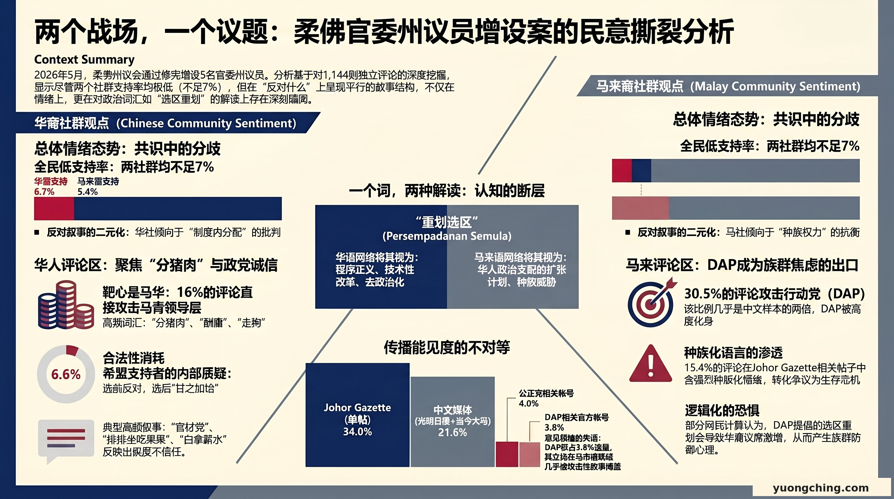

当柔佛州议会在2026年5月7日三读通过修宪，正式增设5名官委州议员时，政界的辩论还在继续。但在Facebook评论区，某种裁决早已完成——而且，华社和马来社群对同一件事的裁决，几乎是两个完全不同的故事。
数据来源

本分析基于33则Facebook公开帖子在柔佛州议会修宪辩论期间（2026年5月4至7日）所产生的评论。两份原始数据档经跨档去重处理后，获得1,144则独立评论，覆盖中文（638则）与马来文／英文（499则）两个语言群体。帖子来源涵盖当今大马、光明日报、南洋商报等中文媒体，Johor Gazette、MyJohor等马来语资讯页，以及DAP与公正党议员的个人帐号。
两个社群对官委议员政策的支持率均不超过7%——这是华马两社唯一高度一致的地方。但「反对谁」和「反对什么」，两个群体完全走向了不同的战场。
华人评论区：靶心是马华，不是制度
在638则中文评论中，主导叙事并不是官委议员制度本身。16%的评论直接攻击马华，特别是时任马青总团长林添顺。「大嘴顺」、「哭包顺」、「走狗」、「分猪肉」是高频词。光明日报一则137条评论的帖子中，23.4%攻击马华，19%使用「分赃／酬庸」框架。
值得注意的是，对DAP的批评也存在，但性质特殊——不是来自反对阵营，而是来自对希盟的失望：
这类评论占华人评论的6.6%。它的性质是合法性消耗——来自基本盘内部的质疑，而不是反对党的操弄。
马来评论区：官委议员议题消失了，DAP成了战场
马来语评论呈现了完全不同的政治生态。30.5%的马来文评论攻击DAP，是整体数据（17%）的近两倍。其中，单一帖子Johor Gazette（389则马来文评论）的攻击DAP比例高达37.5%，15.4%的评论含有种族化语言。
这个帖子的原始内容，是刘镇东「用重划选区取代官委议员」的立场报导。
一个词，两种解读
| 框架 | 华人社群接收 | 马来社群接收 |
|---|---|---|
| 「重划选区」替代方案 | 程序正义的诉求，技术性、去政治化 | 华人政治支配的扩张计划，种族性、具威胁性 |
| 批评主要对象 | 马华（特别是林添顺） | DAP（种族化框架） |
| 基本盘内部批评 | 6.6% — 希盟合法性消耗 | 极少 |
| 种族化语言 | 极少 | 15.4%（Johor Gazette帖子） |
传播能见度的不对等
单一Johor Gazette帖子产生389条评论，占总流量34%。DAP三则帖子合计仅43条评论，占3.8%。在马来语社群媒体场域，DAP的反对立场几乎不存在。存在的，是关于DAP的攻击叙事。
核心发现：两个社群都在反对官委议员政策——但他们在打完全不同的仗。这次数据呈现的核心张力，不在情绪的强度，而在同一论述在两个语言社群产生了完全相反的接收效果。「重划选区」作为替代方案：在华人网络是程序正义的诉求；在马来语网络是华人政治支配的扩张计划。这个裂缝不是由某一方造成的。但它是真实存在的，而且在评论区留下了清晰的数据痕迹。
数据透明注记
本分析基于经跨档去重处理后的1,144则独立评论。情绪与主题分类采用关键词规则标注法，并对每类进行人工抽样校验（每类至少30则）。59.8%的评论未被明确归类；人工抽样显示其中绝大多数为隐性批评或讽刺性评论。Facebook评论者代表意见较强烈的活跃用户，不等同于全体选民意见。